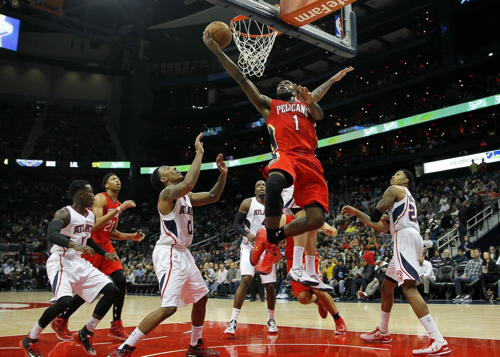
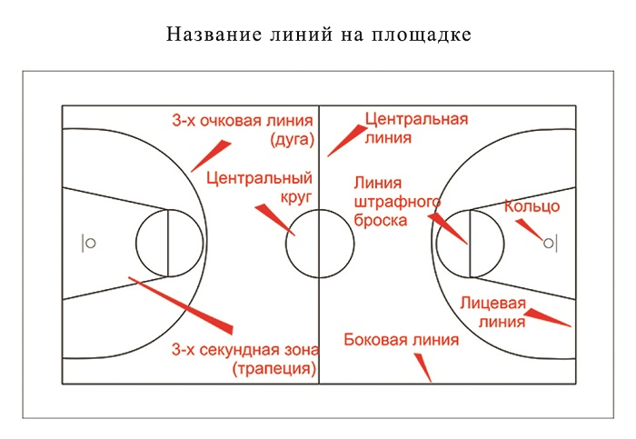

Баскетбол
Баскетбол - это командная игра, где нужно забросить мяч в кольцо. Обычно в баскетболе играет 5 человек в команде. Эта игра пришла к нам из Америки.

Правила игры
- В баскетболе побеждает та команда, каторая забросила наибольшее количество очков.
- С мячом бегать нельзя - это пробежка, только стучать об землю.
- Ногами мяча косаться нельзя.
- Двумя руками мяч везти нельзя - это двойное ведение.
- С трёхочковой линии ддаёться 3 очка, ближе неё 2.
- Везти, остановиться, и везти нельзя - это двойное ведение.
- Перед броском в кольцо или пасом, можно делать 2 шага.
- Когда вы пересикаете чужую половину поля с мячом, на свою половину возвращаться нельзя.
- Когда в начале игры, в центре круга сбрасовуют мяч, игрокам кроме капитанов в ней стоять нельзя.
